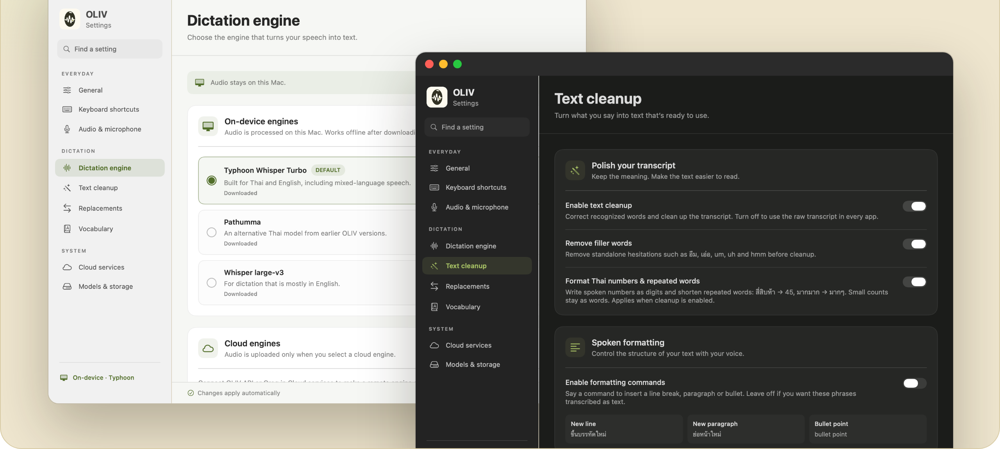

Speak Thai. The English words come out in English.พูดไทยปนอังกฤษ คำอังกฤษก็ออกมาเป็นภาษาอังกฤษ
Most Thai speech-to-text spells English words in Thai letters. OLIV is a free dictation app for Mac that writes them back in English, and it runs on your Mac.แอปถอดเสียงภาษาไทยส่วนใหญ่สะกดคำอังกฤษเป็นตัวไทย OLIV คือแอปพิมพ์ด้วยเสียงสำหรับ Mac ที่เขียนคำเหล่านั้นกลับเป็นภาษาอังกฤษ ใช้ฟรี และทำงานในเครื่องของคุณ
What speech-to-text heardสิ่งที่โมเดลถอดเสียงได้ยิน What OLIV typedสิ่งที่ OLIV พิมพ์
Version 0.2.0, 26 MB. Needs an Apple Silicon Mac (M1 or newer) with macOS 14 or later. Free and open source under MIT.เวอร์ชัน 0.2.0 ขนาด 26 MB ใช้กับ Mac ชิป Apple Silicon (M1 ขึ้นไป) และ macOS 14 ขึ้นไป ฟรีและเป็นโอเพนซอร์ส (MIT)
Stays on your Macอยู่ในเครื่องคุณ
After a one-time model download, dictation works offline. Audio is uploaded only if you choose a cloud engine yourself.หลังโหลดโมเดลครั้งเดียว ใช้งานออฟไลน์ได้เลย เสียงจะถูกส่งออกก็ต่อเมื่อคุณเลือกใช้ cloud engine เอง
About a secondประมาณหนึ่งวินาที
Let go of the key and the text appears at your cursor, in Slack, VS Code, Notes or any other app.ปล่อยปุ่มแล้วข้อความจะขึ้นตรงเคอร์เซอร์ ไม่ว่าจะเป็น Slack, VS Code, Notes หรือแอปไหนก็ได้
Free, no accountฟรี ไม่ต้องสมัคร
MIT-licensed, with no subscription and no telemetry. The code and the benchmark are on GitHub.สัญญาอนุญาต MIT ไม่มีค่าสมาชิก ไม่เก็บข้อมูลการใช้งาน โค้ดและชุดทดสอบอยู่บน GitHub
Hold a key, talk, let goกดค้าง พูด แล้วปล่อย
Five steps run every time you dictate. All of them happen on your Mac with the default engines.ทุกครั้งที่พูด จะมีห้าขั้นตอนนี้ และเมื่อใช้ engine ค่าเริ่มต้น ทุกขั้นทำงานบน Mac ของคุณ
Hold and speakกดค้างแล้วพูด
Right ⌥ by default. Echo cancelling keeps your music out of the recording.ค่าเริ่มต้นคือ ⌥ ขวา ระบบตัดเสียงสะท้อนกันไม่ให้เสียงเพลงปนเข้ามา
Transcribeถอดเสียง
Typhoon Whisper Turbo, a Whisper model tuned for Thai, turns speech into text.Typhoon Whisper Turbo ซึ่งเป็น Whisper ที่จูนมาสำหรับภาษาไทย แปลงเสียงเป็นข้อความ
MLX on the Apple GPUFix known wordsแก้คำที่รู้จัก
A dictionary and sound-alike matching fix common words. Numbers and ๆ get formatted.พจนานุกรมและการเทียบเสียงแก้คำที่พบบ่อย พร้อมจัดรูปแบบตัวเลขและ ๆ
RustRestore Englishคืนคำอังกฤษ
A small language model turns Thai-spelled jargon back into English and leaves the rest alone.โมเดลภาษาขนาดเล็กเปลี่ยนศัพท์ที่ถูกสะกดเป็นไทยกลับเป็นอังกฤษ ส่วนอื่นคงไว้ตามที่พูด
Gemma E2B on MLXPasteวางข้อความ
The text lands at your cursor. Apps you mark as verbatim get the raw transcript.ข้อความถูกวางที่เคอร์เซอร์ แอปที่ตั้งเป็น verbatim จะได้ข้อความดิบ
0.87 smedian time from releasing the key to finished text, on an M4 Pro. Slower Macs take longer.ค่ามัธยฐานตั้งแต่ปล่อยปุ่มจนได้ข้อความ วัดบน M4 Pro เครื่องที่ช้ากว่าจะใช้เวลานานกว่านี้
257 of 264 real recordings came out with the right meaning257 จาก 264 คลิปเสียงจริง ออกมาความหมายถูกต้อง
Each dot is one recording of Thai mixed with English. Red dots are the seven misses. Point at a dot to see its category and score.แต่ละจุดคือหนึ่งคลิปเสียงพูดไทยปนอังกฤษ จุดสีแดงคือเจ็ดคลิปที่พลาด ชี้ที่จุดเพื่อดูหมวดและคะแนน
By kind of speechแยกตามแบบการพูด
Spoken layout commands are the weakest category, because "new line" can also be real content.คำสั่งจัดหน้าด้วยเสียงทำได้อ่อนที่สุด เพราะคำว่า "ขึ้นบรรทัดใหม่" อาจเป็นเนื้อหาจริงก็ได้
Why the cleanup step mattersทำไมขั้นเกลาข้อความถึงสำคัญ
Held-out set of 40 clips full of jargon the system was never tuned on.ชุด held-out 40 คลิป เต็มไปด้วยศัพท์ที่ระบบไม่เคยถูกจูนมาก่อน
Speech models alone, before cleanupโมเดลถอดเสียงล้วน ก่อนเกลาข้อความ
Everyday set, 194 clips. OLIV's own speech model is not the strongest on its own. The cleanup step is what puts the full pipeline at 98% on this set.ชุดบทพูดทั่วไป 194 คลิป โมเดลถอดเสียงของ OLIV เองไม่ใช่ตัวที่เก่งที่สุด ขั้นเกลาข้อความคือสิ่งที่ทำให้ทั้งระบบได้ 98% บนชุดนี้
97% vs 93%
Against Wispr Flow on the same 264 recordings, OLIV kept the meaning more often and finished in about 2.2 seconds per clip versus 8.2. Wispr did better on dense jargon (100% vs 98%). เทียบกับ Wispr Flow บนคลิปชุดเดียวกัน 264 คลิป OLIV รักษาความหมายได้บ่อยกว่า และใช้เวลาประมาณ 2.2 วินาทีต่อคลิป เทียบกับ 8.2 วินาที ส่วนประโยคที่ศัพท์เทคแน่นมาก Wispr ทำได้ดีกว่า (100% เทียบกับ 98%) See every clip side by sideดูผลทุกคลิปเทียบกัน
Listen to it work, and to it failฟังตอนที่ทำได้ และตอนที่พลาด
Six real recordings, published with the speaker's consent. Highlighted words are English that OLIV restored. Red marks a mistake.คลิปเสียงจริงหกคลิป เผยแพร่โดยได้รับความยินยอมจากผู้พูด คำที่ไฮไลต์คือคำอังกฤษที่ OLIV แปลงกลับ สีแดงคือจุดที่ผิด
Read this before you trust the numbersอ่านตรงนี้ก่อนเชื่อตัวเลข
One speakerผู้พูดคนเดียว
Every clip was recorded by one person, the developer, in a quiet room. Other voices, accents and noisy places are untested.ทุกคลิปอัดโดยคนคนเดียวคือผู้พัฒนาในห้องเงียบ ยังไม่ได้ทดสอบกับเสียงคนอื่น สำเนียงอื่น หรือที่ที่มีเสียงดัง
Meaning, not spellingวัดความหมาย ไม่ได้วัดตัวสะกด
A clip counts as right when LaBSE similarity to the reference is 0.80 or higher. A name or number can still be wrong, so glance before you send.คลิปจะนับว่าถูกเมื่อความคล้ายตาม LaBSE กับข้อความอ้างอิงได้ 0.80 ขึ้นไป ชื่อหรือตัวเลขอาจยังผิดได้ ควรตรวจก่อนส่ง
Small setsชุดทดสอบเล็ก
The held-out set has 40 clips and the confirmation set has 30. One clip moves those numbers by 2 to 3 points.ชุด held-out มี 40 คลิป ชุดยืนยันผลมี 30 คลิป คลิปเดียวทำให้ตัวเลขขยับได้ 2 ถึง 3 จุด
Measured on 0.1.11วัดบนเวอร์ชัน 0.1.11
The meaning scores come from the 0.1.11 pipeline. Version 0.2.0 uses the same models, and its word error rate matches within 0.02 points across all 264 clips.คะแนนความหมายมาจาก pipeline ของ 0.1.11 เวอร์ชัน 0.2.0 ใช้โมเดลเดียวกัน และอัตราผิดระดับคำต่างกันไม่เกิน 0.02 จุดบนทั้ง 264 คลิป
Tested onceทดสอบครั้งเดียว
Cloud and Wispr Flow comparisons were run once on this set. Services change over time.การเทียบกับ cloud และ Wispr Flow รันครั้งเดียวบนชุดนี้ บริการเหล่านั้นอาจเปลี่ยนไปตามเวลา
Run it yourselfลองวัดเอง
The benchmark tools in the repository run the shipped pipeline on your own recordings. เครื่องมือวัดผลในรีโปรัน pipeline ตัวจริงกับเสียงที่คุณอัดเองได้ Benchmark instructionsวิธีรัน benchmark
Make it fit how you talkปรับให้เข้ากับวิธีพูดของคุณ

- Your vocabularyคำศัพท์ของคุณ
- Add names, acronyms and jargon so they're recognized correctly from the start.เพิ่มชื่อคน ตัวย่อ และศัพท์เฉพาะ ให้ระบบจำได้ถูกตั้งแต่แรก
- Replacementsคำแทนที่
- Say "อีเมลของผม" and get me@example.com.พูดว่า "อีเมลของผม" แล้วได้ me@example.com
- Thai formattingจัดรูปแบบภาษาไทย
- สี่สิบห้า becomes 45, สองจุดสี่จุดหนึ่ง becomes 2.4.1, and มากมาก becomes มากๆ.สี่สิบห้า เป็น 45, สองจุดสี่จุดหนึ่ง เป็น 2.4.1 และ มากมาก เป็น มากๆ
- Three speech enginesโมเดลถอดเสียงสามตัว
- Typhoon Whisper Turbo for Thai and English, Pathumma, or Whisper large-v3 for mostly English.Typhoon Whisper Turbo สำหรับไทยและอังกฤษ, Pathumma หรือ Whisper large-v3 สำหรับคนที่พูดอังกฤษเป็นหลัก
- Any microphoneไมโครโฟนตัวไหนก็ได้
- Pick your input, cancel speaker echo, and lower other audio while you talk.เลือกไมค์ ตัดเสียงสะท้อนจากลำโพง และลดเสียงแอปอื่นระหว่างพูด
- Optional cloudCloud แบบเลือกได้
- Groq or your own OLIV API server. Both are off until you add a key and select them.Groq หรือเซิร์ฟเวอร์ OLIV API ของคุณเอง ทั้งคู่ปิดอยู่จนกว่าคุณจะใส่ key และเลือกใช้
Try it on your next messageลองใช้กับข้อความถัดไปของคุณ
Download, drag it to Applications, allow the microphone and accessibility, then hold right ⌥. The first launch downloads about 5 GB of models once.ดาวน์โหลด ลากไปไว้ใน Applications อนุญาตไมโครโฟนและ Accessibility แล้วกด ⌥ ขวาค้างไว้ ครั้งแรกจะโหลดโมเดลประมาณ 5 GB ครั้งเดียว
Signed and notarized by Apple. Updates install automatically.เซ็นและผ่าน notarization ของ Apple อัปเดตให้อัตโนมัติ